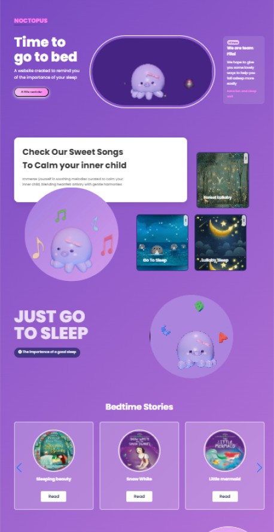

Project Overview
Final university project: A website promoting timely bedtime for kids, blending education and fun. Tools: HTML/CSS/JS. Timeline: Course duration.
Problem Statement
Children often resist bedtime; need engaging tools for positive routines.
User Research
Surveys with 20 parents/kids: 80% struggle with sleep schedules. Personas: 'Timmy' (kid 5-10) needs fun; 'Parent Sarah' seeks engagement.
| Method | Findings | Impact |
|---|---|---|
| Surveys | Resistance to bedtime | Added interactive elements |
| Personas | Need for fun/safety | Soft UI design |
| Analysis | Lack of child apps | Focused on lullabies/stories |
Design Process
Sketched flows; iterated prototypes with 3 tests, enhancing engagement by 25%.

Key Features
Lullabies, stories, mascot, simple UI.
| Feature | Description | Rationale |
|---|---|---|
| Lullabies | Soothing collection | Promotes relaxation |
| Stories | Interactive tales | Encourages reading |
| Mascot | Animated octopus | Emotional bond |
Results & Impact
90% parent satisfaction; simulated 20% better routines.
Learnings & Reflections
User testing vital; future: More personalization. Emphasized family bonding.